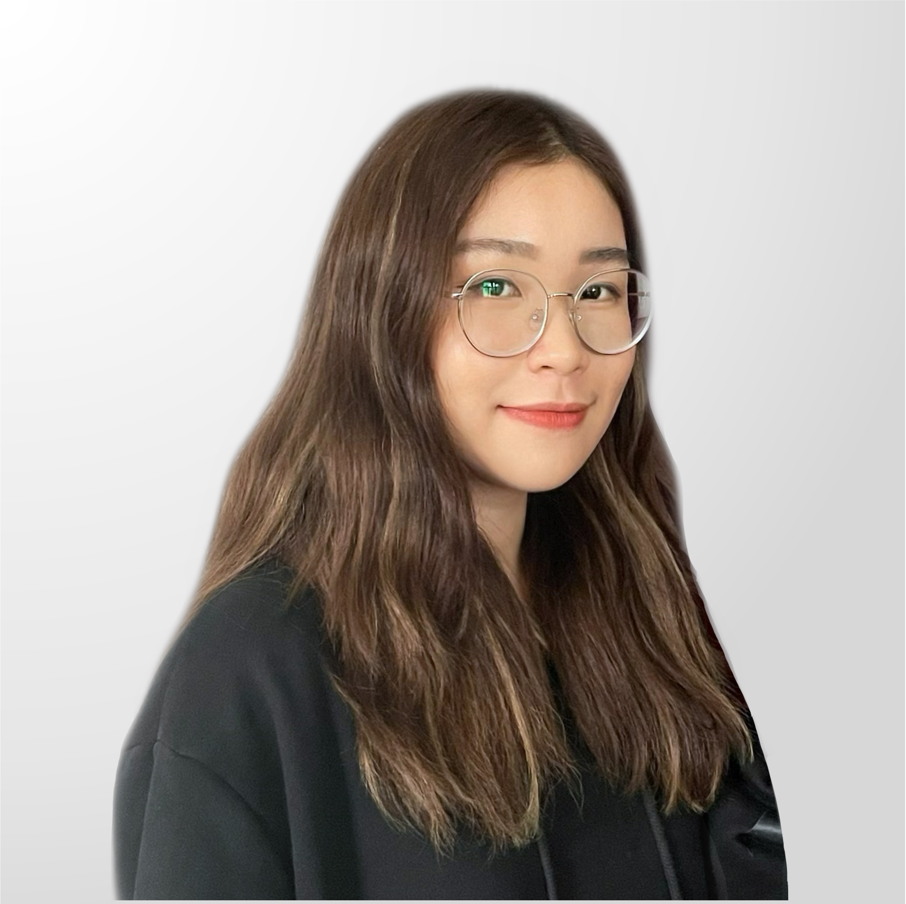
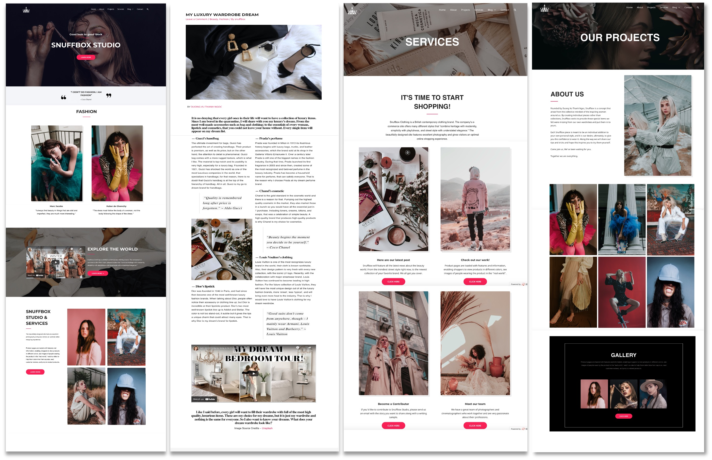

Duong Vu Thanh Ngoc

- Personal Information:
- Name: Duong Vu Thanh Ngoc
- Student ID: s3924496
- Birthdate: 17/1/2003
- Introduction:
- Future Plan:
My name is Duong Vu Thanh Ngoc and I am from team 925. I was born and raised in Ho Chi Minh City. I am currently a first-year student at RMIT University. With a strong passion for technology, I am currently pursuing an Information Technology degree at this university. When it comes to languages, I am fluent in Vietnamese (my mother tongue) and English. In my leisure time, I like volunteering for charitable organizations. One of the charitable activities I have taken part in is the United Minds Mindlight Project, in which I taught English and life skills to visually impaired students at Nguyen Dinh Chieu school. Aside from that, I have celebrated a moon festival for the orphans at Mai Am Anh Sang (District 3, HCMC) and helped in delivering charity meals to the lonely disabled and homeless elderly in HCMC. Apart from my interest in charitable activities, I also love cooking and reading detective books. About my high school background, I used to be a loyal member of the school's Robotics Club, and I was also joining many web-designing classes. Thanks to that, I was able to familiarize myself with HTML and CSS and became interested in the job of Front-end Developer. Beyond that, I have also created a website using WordPress.
Furthermore, in order to achieve my goal of becoming a senior Front-end Developer, I intend to complete the RMIT Information Technology degree and then gain user experience and design skills. In the near future, I intend to learn more about JavaScript by reading the documentation and using online resources such as Codecademy or Freecodecamp. To obtain additional experience, I plan to work on a side project, such as my online portfolio or website, or try freelancing and attend an internship to have a feel of the real working experience. My journey will undoubtedly be long and tough, but I am confident that if I keep on track, I will reach my destination.